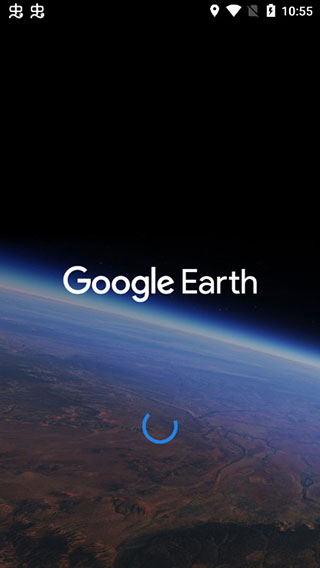

Google Earth 到底怎么用？一次把最常问的问题答完
整理一篇关于 Google Earth 的快问快答：它是什么、谁适合用、安装包从哪拿、3D 建筑怎么开、KML 导入报错怎么修、Pro 和网页版差在哪——九个问题覆盖日常使用的八成场景。
整理一篇关于 Google Earth 的快问快答，把新用户最常卡壳的几个问题一次说清。
它到底是什么，不是地图软件吗？
Google Earth 当然能当地图用——卫星影像、街景、3D 地形这些和 Google Maps 重叠的能力它都有，但它的定位远不止「看路」。它本质上是一个三维地球浏览 + 地理数据标注平台，在它的官网上能看到完整的功能清单：你可以在地球上画路径、圈区域、测面积、导入别人做好的地标文件，甚至把一张老地图叠到现代卫星影像上做对比。专业测量、轨迹回放、城市沙盘浏览、户外路线规划，这些才是 Google Earth 真正拉开和普通地图差距的地方。
谁适合装它，普通人用得上吗？
看得懂地图的人都用得上。户外党可以导入 GPX 运动轨迹回放自己上次的徒步路线；买房前在卫星图上圈一下小区周边 5 公里看看有没有嫌恶设施；学生做地理作业用面积测量工具估一下湖泊大小；甚至只是纯好奇，把视角倾斜到东京市中心看 3D 建筑夜景——这些场景 Google Earth 都能覆盖。专业用户（测绘、规划、科研）用 Pro 版的测量和 KML 导入能力，普通用户用网页版或移动端就够。
安装包从哪拿，分几个版本？
桌面端 Google Earth Pro 是免费的，安装包从官方下载拿，Windows 和 macOS 都有。装完打开就是完整版——Pro 标记主要是给商业用户的授权标识，个人使用没有功能限制。此外还有网页版直接在浏览器里用，移动端 App（iOS / Android）外出查点方便。三个版本账号数据可以互通，但 KML 导入和测量工具目前主要在桌面端 Pro 上最完整。
3D 建筑和倾斜视角怎么开？
打开左侧图层面板，找到「3D 建筑」勾选上，然后按住 Shift + 拖动鼠标就能倾斜视角。Pro 桌面版默认会在有 3D 建筑覆盖的区域自动开启，但网络慢的时候可能需要手动加载。东京、纽约、伦敦、上海这些核心城市的精度最高——倾斜之后能看到立体的高楼模型，配合地形层一起打开，整座城市像沙盘一样浮在地球表面。想看夜景的话，Pro 版用视图菜单里的太阳 → 夜空切换，网页版在主题设置里。
画路径和测面积，是一回事吗？
不是一回事，但用同一个标尺对话框。画路径（工具 → 标尺 → 路径标签页）是在地球上点一串节点连成一条线，用来标注徒步路线、航线、管道走向之类的线性要素；测面积切换到多边形或圆形标签页，沿目标区域边界逐点点击闭合后，对话框直接显示面积和周长。两个功能互相独立，你可以只画不测，也可以只测周长不算面积。精度上要注意：必须在正俯视视角下测量，顶点越密集越精确，Pro 版内部用球面三角计算面积已经考虑了地球曲率。

KML 文件导入报错怎么修？
最常见的三个坑。第一个是文件扩展名改了但内部格式不对——把 .xml 重命名成 .kml 但里面不是 KML 结构，用记事本打开第一行必须是 <?xml version="1.0" encoding="UTF-8"?>。第二个是中文乱码——标准 KML 要求 UTF-8 编码，如果导入后看到一串 æµ 这样的字符，说明原文件是 GBK 编码，用记事本另存为 UTF-8 就好。第三个是导入了但地球上什么都没显示——先看左侧位置面板里有没有勾上那个条目的复选框，没勾选的地标不会叠在地球上；再双击条目的名字，地球会自动飞到对应位置。
导入的地标还能改吗，能不能导出去分享？
能改也能导。导入后的地标可以移动位置、改图标、加说明；路径可以继续插节点或删节点、改颜色和粗细；多边形可以调边界点、改填充色。整理好了选中左侧面板里的文件夹或单个地标，右键 → 另存为 → 选 KML 或 KMZ 就行。规则很简单：纯文字和坐标用 KML，要是地标里带了本地图片、自定义图标或样式模板，必须导出 KMZ——它是个 zip 包，会把所有关联资源打在一起，不会出现对方导入后图片丢失的情况。这块数据导入导出的完整说明可以去google earth文档里翻，对 KML 格式规范和常见报错的处理都讲得很细。
和 Google Maps 比，差在哪？
Maps 是找路工具，Earth 是看球工具。Maps 擅长路线规划、实时路况、周边搜索，给你「从 A 到 B 怎么走」；Earth 擅长三维视角、数据标注、测量计算、文件导入导出，给你「这颗星球长什么样」。两者共享卫星影像和街景底图，但 Earth 独有的 3D 建筑层、KML/KMZ 数据管道、专业测量工具、飞行 Tour 录制这些能力，Maps 完全没有。反过来 Earth 也不做实时导航和公交路线。日常查路用 Maps，看地理空间关系、做标注和测量用 Earth。
值不值得装？
值得。免费、装完就能用、桌面端 Pro 的功能比网页版和移动端全得多。只要你对「在一颗可以缩放旋转倾斜的地球上看世界」这件事有哪怕一点兴趣，装了就不会后悔。
上面整理的九个问题覆盖了日常使用 Google Earth 最容易卡壳的环节。资料方面，这套说明文档我同步维护在三个代码仓库里，方便不同网络环境下查阅——开源社区维护的 GitHub 主仓库、国内访问速度更快的 Gitee 镜像、还有 GitCode 备份，三个地址上的内容是一致的。